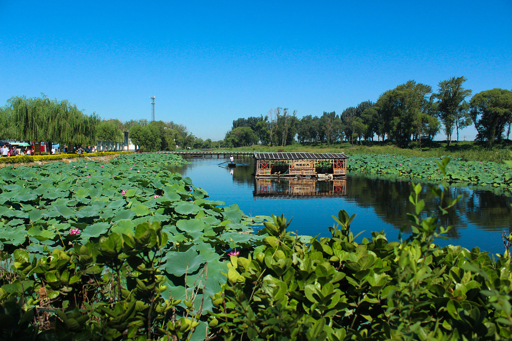

Located in North China, Hebei Province is a province with diverse topography and rich culture.
The geographical location of Hebei Province is between 113°27' and 119°50' east longitude and 36°05' and 42°40' north latitude.
Located between the Inner Mongolia Plateau and the North China Plain, the terrain slopes from northwest to southeast, with mountains, hills and plateaus in the northwest and vast plains in the center and southeast.
The province covers an area of 188,800 square kilometers, of which 70% is plain. Hebei Province is surrounded by Beijing, the capital city, Tianjin, an important commercial port in the north, and the Bohai Sea in the east.
This position makes Hebei an important hub connecting North and northeast China.
The topography of Hebei Province is diverse, including plateaus, plains, mountains, basins, deserts, hills, lakes and beaches.
Located in the northern part of Hebei Province, Yanshan Mountain is the boundary between plateau and plain, and the throat between northeast and North China.
It is formed by the geological uplift of the earth's crust. There are other famous mountains in Hebei, such as Taihang Mountain, Yanshan Mountain and Hengshan Mountain.
These mountains not only bring natural beauty to Hebei Province, but also help prevent desertification.
The basins and valleys of Hebei Province are mainly distributed in the northwest, such as Shijiazhuang Basin and Handan Basin.
These topographic features make Hebei Province very rich in natural scenery and natural resources.


<
>
As an important birthplace of the Chinese civilization,
Hebei Province has formed a rich and unique culture after thousands of years of accumulation,
and has become a province with real cultural resources.
The province now has 34,046 immovable cultural relics and 3 and 5 world cultural heritage sites,
including the Great Wall, the Summer Resort and its surrounding temples,
the Eastern Qing Tombs and the Western Qing Tombs.
There are many natural sceneries in Hebei Province,
among which Baiyangdian is the most famous.
Baiyangdian is the largest lake on China's Haihe Plain,
located in central Hebei Province.
Baiyangdian Lake is formed by the confluence of the alluvial fans of Yongding River
and Hutuo River in front of Taihang Mountain.
At present, there are 143 large and small lakes, of which Baiyang Lake,
Shaoche Lake, Yangjiao Lake, Chiyu Lake, Houtang Lake and so on are the largest,
which is generally called Baiyang Lake. It has an area of 336 square kilometers.
It receives Puhe River, Tang River, Caohe River,
Schilong River and other rivers from the north, west and south.
The average water storage capacity is 1.32 billion cubic meters.
Rich in aquatic resources, there are more than 50 kinds of freshwater fish,
and a large area of reed and acres of contiguous lotus lake is famous,
known as the pearl of North China.


There are many famous historical and cultural cities in Hebei Province,
such as Handan, Baoding, Chengde, Zhengding and Shanhaiguan.
These cities have a long history and unique cultural deposits,
is an important part of tourism resources in Hebei Province.
All in all, Hebei Province is a province rich in natural resources and cultural heritage.
For tourists, Hebei Province can not only enjoy the beautiful natural scenery,
but also learn about the rich history and culture.